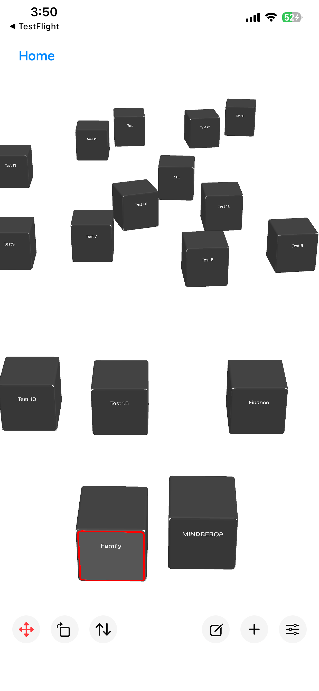

Un espace où les pensées peuvent avoir leur place, où les chemins possibles peuvent rester ouverts, et où vous décidez quand — ou même si — vous souhaitez aller quelque part à partir de ces pensées.
Pendant que vous faites autre chose, des pensées peuvent dériver dans le Mental Background.
Certaines ne font que passer.
D'autres reviennent sans cesse.
Parfois, il suffit de changer votre relation avec une pensée.
Vous pouvez la regarder autrement.
La mettre de côté.
Lui accorder moins d'attention.
Établir une limite.
Ou permettre à votre attention de se déplacer ailleurs.
La pensée peut alors s'apaiser.
Mais parfois, elle reste présente.
L'Espace de pensées offre à une pensée un endroit où exister, sans vous obliger à la résoudre, à l'organiser ou à la transformer en tâche.
Et si vous découvrez un jour qu'il existe un endroit où vous souhaitez aller à partir de cette pensée, un chemin peut commencer là.
Une pensée peut avoir sa place
avant même d'avoir une destination.


Une grande partie de MINDBEBOP commence par des pensées qui peuvent être exprimées avec des mots.
Une phrase.
Une inquiétude.
Quelque chose à ne pas oublier.
Une idée.
Quelque chose que vous vous répétez sans cesse.
Quelque chose qui surgit alors que votre attention devrait être ailleurs.
Ces pensées formulées en mots peuvent dériver dans ce que MINDBEBOP appelle le Mental Background.
MINDBEBOP ne suppose pas que toutes les pensées présentes dans le Mental Background sont importantes.
Il ne suppose pas non plus que toutes les pensées récurrentes ne sont que du bruit dépourvu de sens.
Différentes pensées peuvent nécessiter différentes façons d'entrer en relation avec elles.
Certaines pensées peuvent se comporter comme du Thought Noise.
Elles peuvent se répéter.
Vous interrompre.
Prendre plus de place dans votre esprit que leur importance ne semble le justifier.
Ou simplement rester difficiles à laisser de côté sans y prêter attention.
Les différents outils MINDBEBOP proposent différentes façons de modifier votre relation avec ces pensées.
MindFlipOut
Regardez une pensée récurrente sous un autre angle.
MindShoutOut
Mettez de côté une pensée que vous n'avez pas besoin de garder à l'esprit pour le moment.
MindZoneOut
Offrez un moment de calme à un esprit surchargé.
MindBackOut
Prenez un peu de distance avec certaines applications.
MindBackyard
Donnez à votre attention de l'espace pour se déplacer.
Parfois, ce changement de relation peut suffire.
La pensée s'apaise.
Rien d'autre n'a besoin de se produire.
Mais parfois, une pensée reste présente.
Cela soulève une question que MINDBEBOP cherche à explorer :
Si changer notre relation avec une pensée ne suffit pas,
pourrait-il parfois exister malgré tout un endroit où nous souhaiterions aller à partir de cette pensée ?
C'est une hypothèse.
MINDBEBOP ne suppose pas que chaque pensée persistante contient un objectif ou une destination cachés.
L'Espace de pensées nous offre un endroit où explorer cette question.
Le Mental Shelving consiste à mettre consciemment quelque chose de côté dans son esprit, afin de ne plus avoir à y consacrer son attention immédiate.
La pensée n'est pas nécessairement résolue.
Elle n'est pas nécessairement oubliée.
Vous vous autorisez à la laisser de côté pour le moment, tout en conservant la possibilité d'y revenir plus tard.
L'Espace de pensées donne une dimension spatiale à cet acte.
Pensée
↓
Bloc de pensées
↓
Lui donner une place dans l'Espace de pensées
↓
La laisser là
↓
Y revenir quand vous le souhaitez
Nous appelons cela la mise de côté mentale spatiale (Spatial Mental Shelving).
Le terme « Shelving » ne désigne pas une étagère physique ou représentée graphiquement.
Il désigne l'acte mental de mettre quelque chose de côté.
L'Espace de pensées donne à cet acte une place visible et persistante dans l'espace.
Un Bloc de pensées peut simplement exister quelque part dans cet espace.
Aucun objet en forme d'étagère n'est nécessaire.
Aucune catégorie n'est nécessaire.
Aucune priorité n'est nécessaire.
Aucune date limite n'est nécessaire.
Aucune action n'est nécessaire.
Donnez une place à la pensée.
Mettez-la de côté
sans la perdre.
La plupart des systèmes numériques transforment une pensée en information.
Pensée
↓
Texte
↓
Élément de liste
L'Espace de pensées explore une autre forme de représentation.
Pensée
↓
Bloc de pensées
↓
Lieu
Un Bloc de pensées donne à une pensée une présence visuelle persistante dans l'espace.
Un Bloc de pensées peut également contenir son propre Espace de pensées imbriqué, permettant à d'autres pensées d'exister à l'intérieur.
Vous pouvez le déplacer.
Vous déplacer autour de lui.
Le faire pivoter.
Modifier sa taille.
Vous en rapprocher.
Vous en éloigner.
Le laisser quelque part.
Revenir plus tard.
Ou simplement le laisser tranquille.
Voir une pensée ne signifie pas que vous devez vous en occuper.
Il existe une différence entre :
Je dois continuer à m'en souvenir.
et :
Je sais où cela se trouve.
La mise de côté mentale spatiale explore la possibilité que donner une place persistante à une pensée aide à créer cette seconde sensation.
La pensée reste accessible.
Mais cette accessibilité ne nécessite pas de la maintenir constamment au premier plan de votre conscience.
La plupart des logiciels attirent les informations vers votre attention.
Regardez ceci.
Souvenez-vous de ceci.
Répondez à ceci.
Faites ceci ensuite.
L'Espace de pensées peut inverser cette relation.
Le Bloc de pensées peut rester là où il se trouve.
Vous décidez si vous souhaitez vous en approcher.
Ce n'est pas la pensée qui vient m'interrompre.
C'est moi qui choisis de m'approcher d'elle.
Vous pouvez la rejoindre et rester un moment avec elle.
Vous pouvez la déplacer.
Vous pouvez découvrir quelque chose de nouveau à son sujet.
Ou vous pouvez faire demi-tour et la laisser là.
La décision de vous en approcher vous appartient.
La plupart des systèmes d'information vous demandent rapidement de classer ce que vous saisissez.
Quelle catégorie ?
Quel projet ?
Quelle priorité ?
Pour quand ?
L'Espace de pensées peut commencer par une question plus fondamentale :
Où est-ce que je veux placer cela ?
Cela peut suffire.
Le placement peut précéder l'organisation.
Ou l'organisation peut ne jamais être nécessaire.
Une liste exprime généralement les relations par l'ordre, les étiquettes et les catégories.
Un espace peut les exprimer par le placement.
Une pensée peut être proche.
Une autre peut être plus éloignée.
Deux pensées peuvent être placées l'une près de l'autre.
Quelque chose peut rester directement dans votre champ de vision.
Autre chose peut rester à un endroit où vous avez moins de chances de le rencontrer.
L'Espace de pensées n'a pas besoin d'attribuer une signification universelle à ces positions.
Plus proche ne signifie pas nécessairement plus important.
Plus éloigné ne signifie pas nécessairement moins important.
Plus petit ne signifie pas nécessairement moins significatif.
Une rotation particulière ne doit pas nécessairement correspondre à un type particulier de pensée.
La disposition peut simplement refléter la manière dont vous souhaitez que ces pensées existent autour de vous.
Vous n'avez pas toujours besoin de passer formellement en revue ce qui vous préoccupe.
Parfois, vous pouvez rencontrer des pensées en vous déplaçant dans l'Espace de pensées.
Ah, c'est toujours là.
Je vois cela autrement maintenant.
Ces deux choses sont peut-être liées.
Je n'ai toujours pas envie de m'occuper de cela.
Peut-être qu'il y a un endroit où j'aimerais aller à partir de cette pensée.
Vous pouvez ensuite continuer à vous déplacer.
Vous n'êtes pas obligé de traiter tout ce que vous rencontrez.
L'Espace de pensées peut faire en sorte que retrouver vos pensées ressemble moins à la consultation d'une boîte de réception qu'à la rencontre de choses dans un environnement.
Un Bloc de pensées n'est pas la même chose qu'un objectif.
Et ce n'est pas non plus la même chose qu'une Mental Destination.
Imaginez un Bloc de pensées appelé :
Famille
La famille n'est pas une destination.
Mais différentes directions possibles peuvent émerger de cette pensée.
Famille
↙ ↓ ↘
Passer plus de temps ensemble sans distractions
Se donner davantage de marge de manœuvre financière
Faire preuve de plus de patience à la maison
Ces directions peuvent coexister.
Elles peuvent avoir de l'importance à différents moments.
Elles peuvent s'inscrire dans des échelles de temps différentes.
Elles peuvent éventuellement mener à différentes Mental Destinations.
Ou ne jamais donner lieu à une Mental Navigation.
Un Bloc de pensées n'a donc pas besoin d'avoir un seul vecteur de direction fixe.
Un Bloc de pensées peut être un point de départ
à partir duquel plusieurs directions sont possibles.
L'Espace de pensées offre un moyen concret de conserver les chemins possibles associés à une pensée.
Un Bloc de pensées peut être associé à des Mental Steps enregistrés dans MindEntry.
Un Bloc de pensées peut être associé à un seul ensemble de Mental Steps.
Ou à plusieurs.
Bloc de pensées
↓
Mental Steps
Mental Steps
Mental Steps
Lorsque des Mental Steps sont associés, un petit indicateur de lien apparaît directement sur le Bloc de pensées.
Le nombre indique combien d'ensembles de Mental Steps associés sont disponibles.
Touchez cet indicateur pour voir les Mental Steps associés à cette pensée.
Choisissez-en un. MindEntry l'ouvre pour vous permettre de commencer ces Mental Steps.
Rencontrer la pensée
↓
Voir les chemins possibles
↓
En choisir un quand vous le souhaitez
↓
Commencer les Mental Steps dans MindEntry
Le Bloc de pensées reste une pensée.
Les Mental Steps associés restent des chemins possibles.
C'est toujours à vous de décider si vous souhaitez emprunter l'un de ces chemins.


Associer des Mental Steps existants n'est pas la seule possibilité.
Parfois, vous rencontrez un Bloc de pensées et réalisez qu'aucun des chemins disponibles ne correspond à ce que vous souhaitez faire maintenant.
Ou peut-être n'avez-vous encore créé aucun Mental Steps pour cette pensée.
L'Espace de pensées peut également servir de point de départ pour créer de nouveaux Mental Steps.
Plutôt que de vous demander de commencer avec un plan entièrement défini, une interaction avec la pensée peut vous aider à identifier une Mental Destination possible.
À partir de là, MindEntry peut vous aider à commencer à avancer grâce aux Mental Steps.
Bloc de pensées
↓
Explorer ce que vous pourriez faire
↓
Choisir une Mental Destination
↓
Créer des Mental Steps
↓
Commencer une Mental Navigation
La distinction importante reste la même :
Un Bloc de pensées ne devient pas automatiquement une tâche.
C'est vous qui décidez si cette interaction avec la pensée doit mener à une action.
La mise de côté mentale spatiale donne une place à une pensée.
Mais une fois qu'une pensée a sa place, une autre question devient possible :
Quelles sortes de structures pourraient changer
notre manière de rencontrer une pensée ?
MINDBEBOP appelle ces structures le mobilier de pensées.
Le mobilier de pensées n'est pas simplement une décoration dans l'Espace de pensées.
C'est une manière de concevoir des interactions particulières avec les pensées.
Un élément de mobilier de pensées pourrait vous aider à examiner une pensée, à changer de perspective, à explorer des directions possibles ou à interagir avec elle d'une autre manière.
L'établi (Workbench) en est le premier exemple concret.
Certaines pensées semblent chercher à nous protéger de quelque chose.
Elles peuvent anticiper un échec.
Un rejet.
Une perte.
Une situation embarrassante.
Ou un autre résultat que nous préférerions éviter.
MINDBEBOP appelle ces pensées des pensées protectrices fondées sur la peur.
Par exemple :
Et si j'échouais ?
Cette pensée peut revenir sans cesse.
Elle peut interrompre votre attention.
Vous pouvez essayer de la regarder autrement ou de la mettre de côté.
Parfois, cela suffit.
Mais parfois, la pensée reste présente.
L'établi propose une autre manière d'interagir avec elle.
Plutôt que d'essayer immédiatement d'éliminer la pensée, l'établi pose une question :
Cette pensée peut-elle vous suggérer quelque chose d'utile à faire ?
Vous n'êtes pas obligé de répondre oui.
L'établi propose différentes directions selon votre réponse.

Si la pensée suggère qu'il pourrait y avoir quelque chose d'utile à faire, l'établi vous demande :
Que pourriez-vous faire ?
Vous apportez votre propre réponse.
Par exemple, une pensée concernant la possibilité d'échouer lors d'une prochaine présentation pourrait vous amener à répondre :
Répéter l'introduction pendant cinq minutes.
L'établi peut utiliser cette réponse comme nouvelle Mental Destination et comme nom d'un nouvel ensemble de Mental Steps.
Grâce aux Adaptive Steps, MindEntry peut ensuite vous aider à commencer à avancer vers cette destination.
Pensée protectrice fondée sur la peur
↓
Que pourriez-vous faire ?
↓
Votre réponse
↓
Mental Destination
↓
Adaptive Steps
↓
Mental Navigation
L'établi ne décide pas de ce que vous devriez faire.
Il vous donne l'occasion d'identifier vous-même quelque chose d'utile.
Et le prochain mouvement peut rester suffisamment petit pour que vous puissiez commencer là où vous êtes.
Parfois, vous ne savez pas si une pensée protectrice suggère quelque chose d'utile à faire.
Vous avez peut-être déjà rencontré des inquiétudes similaires.
Et vous avez peut-être déjà réussi à avancer vers une Mental Destination malgré ces inquiétudes.
MindAnchor peut conserver deux types d'informations provenant d'une Mental Navigation précédente :
Obstacles anticipés (Expected Blocks)
Ce qui, selon vous, risquait de vous empêcher d'avancer.
Ce qui s'est réellement passé (What really happened)
Ce que vous avez réellement vécu.
Lorsque ces deux informations ont été enregistrées, l'établi peut les rendre disponibles pour une comparaison.
Par exemple :
Obstacle anticipé
Je vais probablement perdre tous mes moyens pendant la présentation.
Ce qui s'est réellement passé
J'étais nerveux au début, mais j'ai terminé ma présentation.
Cette comparaison ne prouve pas que la prochaine expérience se déroulera de la même manière.
Elle ne garantit pas que l'obstacle anticipé disparaîtra.
Et elle ne signifie pas que la peur initiale était déraisonnable.
Elle vous permet simplement de comparer ce que vous aviez anticipé avec ce que vous avez réellement vécu.
Cela peut changer votre manière de rencontrer cette pensée aujourd'hui.
Ou peut-être pas.
L'interprétation vous appartient.
Parfois, vous n'avez pas envie d'explorer une action possible.
Vous n'avez peut-être pas non plus envie d'examiner vos expériences passées.
Peut-être souhaitez-vous simplement un moment de calme.
L'établi peut vous proposer une session à faible stimulation dans MindZoneOut, en utilisant le mode None.
Vous n'avez pas besoin de définir une Mental Destination.
Vous n'avez pas besoin de créer des Mental Steps.
Et vous n'avez pas besoin de résoudre la pensée avant de quitter la session.
Toutes les pensées n'ont pas besoin d'une réponse.
Parfois, vous pouvez simplement choisir le calme.
Une pensée protectrice n'est pas automatiquement un avertissement indiquant que quelque chose de mauvais va se produire.
Elle n'est pas non plus automatiquement un bruit dépourvu de sens.
L'établi ne détermine pas quelle interprétation est correcte.
Il ne pose pas de diagnostic sur la pensée.
Il ne décide pas de votre Mental Destination.
Il ne vous oblige pas à créer des Mental Steps.
Il propose une structure pour explorer votre relation avec cette pensée.
Il y a peut-être quelque chose d'utile à faire.
Il y a peut-être quelque chose d'utile à se rappeler.
Ou peut-être n'avez-vous envie de rien faire pour le moment.
Ces trois possibilités sont toutes acceptables.
C'est ce qui fait de l'établi un exemple de mobilier de pensées.
La structure modifie les interactions possibles.
Mais les choix vous appartiennent toujours.
Associer des Mental Steps à un Bloc de pensées ne transforme pas cette pensée en tâche.
Créer de nouveaux Mental Steps ne signifie pas que chaque étape doit être accomplie.
Un chemin possible n'a pas besoin de devenir le chemin principal.
Plusieurs chemins peuvent rester disponibles en même temps.
Et vous n'êtes obligé d'en suivre aucun.
Cette pensée est ici.
Il existe des endroits où je pourrais aller à partir d'elle.
Je n'ai pas besoin d'aller quelque part maintenant.
L'Espace de pensées ne devrait pas devenir un système qui examine votre vie et annonce :
7 objectifs.
23 étapes.
3 choses que vous auriez déjà dû faire.
Cela transformerait les possibilités en pression.
L'Espace de pensées explore la possibilité inverse :
Un chemin peut rester disponible
sans devenir une exigence.
Parfois, vous vous approchez d'un Bloc de pensées et réalisez que vous souhaitez réellement changer quelque chose.
Il existe un endroit vers lequel vous aimeriez avancer à partir de là où vous êtes.
Une direction possible peut alors devenir une direction choisie intentionnellement.
Vous pouvez choisir des Mental Steps déjà associés au Bloc de pensées.
Ou vous pouvez identifier une nouvelle Mental Destination grâce à une interaction, par exemple avec l'établi.
Le changement important n'est pas que le Bloc de pensées soit devenu une tâche.
C'est que vous avez choisi une direction.
Pensée
↓
Directions possibles
↓
Direction choisie
↓
Mental Destination
↓
Mental Navigation
MindEntry fournit la couche de Navigation.
Vous pouvez avancer vers votre Mental Destination grâce aux Mental Steps.
Faites le prochain pas.
Regardez où vous vous trouvez ensuite.
Changez d'itinéraire.
Changez de Mental Destination.
Ou continuez à partir de votre nouvelle Current Position.
Cette distinction est importante.
La Mental Navigation implique un mouvement intentionnel vers une Mental Destination.
Current Position
↓
Mental Steps
↓
Mental Destination
L'Espace de pensées n'exige rien de tout cela.
Vous pouvez y entrer sans Mental Destination.
Vous pouvez vous déplacer sans chercher à arriver quelque part.
Vous pouvez regarder un Bloc de pensées sans commencer de Navigation.
Vous pouvez y associer des Mental Steps sans les démarrer.
Vous pouvez voir plusieurs directions possibles et n'en choisir aucune.
L'Espace de pensées peut préserver les possibilités
avant qu'elles ne deviennent une Navigation.
MindBackyard contient différents espaces correspondant à différentes manières d'interagir avec l'attention.
Infinite Hallway ne contient presque rien qui demande à être pensé.
Bouger.
Déambuler.
Laisser l'attention se détendre.
L'Espace de pensées permet à des éléments de votre propre esprit d'exister dans l'environnement.
Bouger.
Remarquer.
S'approcher.
Changer d'orientation.
Passer son chemin.
Aucun de ces deux espaces n'exige de destination.
Infinite Hallway peut également faire partie d'une Mental Navigation.
Un Mental Step peut vous y envoyer pendant un moment, puis vous ramener au même Mental Step en cours lorsque vous êtes prêt à continuer.
L'Espace de pensées et Infinite Hallway n'ont donc pas besoin de devenir un seul et même environnement.
Ils peuvent jouer des rôles différents au sein du système MINDBEBOP.
L'Espace de pensées n'a pas vocation à devenir un gestionnaire visuel de tâches.
Il n'a pas besoin de colonnes « À faire », « En cours » et « Terminé ».
Il n'a pas besoin de scores de productivité.
Il n'a pas besoin de séries de réussites consécutives.
Il n'a pas besoin de vous récompenser lorsque vous remplissez l'espace.
Il n'a pas non plus besoin de vous récompenser lorsque vous le videz.
Il n'a pas besoin de transformer chaque pensée en travail.
Et il n'a pas besoin de transformer chaque Mental Navigation possible en obligation.
Cela ne signifie pas que MINDBEBOP rejette la productivité.
La productivité est l'une des raisons possibles d'utiliser la Mental Navigation.
Mais l'Espace de pensées permet également d'entretenir des relations avec des pensées qui n'ont rien à voir avec l'accomplissement de tâches.
Une possibilité n'est pas une pression.
L'Espace de pensées doit rester spacieux.
Les zones vides ne sont pas de l'espace d'écran gaspillé.
Elles font partie de l'expérience.
Un Bloc de pensées n'a pas besoin de se trouver constamment devant vous.
Les chemins possibles n'ont pas besoin d'être visibles en permanence.
L'environnement ne devrait pas chercher constamment à capter votre attention.
L'espace autour d'une pensée
peut compter autant que
la pensée elle-même.
Un environnement spatial ne devrait pas rendre vos propres pensées difficiles à retrouver.
Déambuler peut être utile lorsque vous en avez envie.
Mais cela ne devrait pas devenir obligatoire lorsque vous savez déjà ce que vous cherchez.
L'exploration peut être spatiale.
Retrouver ce que l'on cherche doit rester simple.
L'Espace de pensées ne devrait jamais devenir un labyrinthe que vous devez entretenir.
L'Espace de pensées n'a pas besoin de se réinitialiser chaque fois que vous le quittez.
Les Blocs de pensées peuvent rester là où vous les avez placés.
Les Mental Steps peuvent rester associés à ces blocs.
Mais votre relation avec ces pensées n'a pas besoin de rester la même.
Avant, cette pensée me semblait proche.
Maintenant, je souhaite prendre davantage de distance.
Avant, je ne voyais qu'une seule direction à partir de cette pensée.
Maintenant, j'en vois plusieurs.
Je pensais devoir agir.
Maintenant, je peux la laisser tranquille.
Les mots inscrits sur le Bloc de pensées n'ont peut-être pas changé.
Ce qui a changé, c'est peut-être votre manière de rencontrer cette pensée.
La plupart des applications conservent la version la plus récente des informations.
L'Espace de pensées pourrait préserver quelque chose de plus discret.
Ce qui est resté proche.
Ce qui s'est éloigné.
Ce qui est resté présent.
Ce vers quoi vous êtes revenu.
Ce qui a commencé à paraître différent.
Vous pourriez revenir après plusieurs jours, semaines ou mois et remarquer que l'espace vous semble différent.
Non pas parce qu'une application a calculé un score.
Non pas parce qu'un tableau de bord vous a annoncé que vous aviez progressé.
Mais parce que vous reconnaissez vous-même la différence.
Ma relation avec cette pensée a changé.
Ce changement ne nécessite pas d'avoir terminé une Mental Navigation.
Parfois, déplacer quelque chose, le laisser tranquille ou le rencontrer autrement peut suffire.
L'Espace de pensées n'a pas vocation à visualiser toutes vos pensées.
Ce n'est pas une carte mentale en 3D.
Il n'a pas besoin de révéler toutes les associations.
Il n'a pas besoin de tout relier à tout le reste.
Même lorsque des Blocs de pensées contiennent des Espaces de pensées imbriqués, l'objectif n'est pas de reconstruire une hiérarchie complète de vos pensées.
L'imbrication est simplement une autre relation spatiale que vous pouvez choisir.
Vous pouvez placer des pensées ensemble sans définir toutes les relations entre elles.
Parfois, en voir moins peut être plus utile.
Un Bloc de pensées peut exister sans révéler toutes ses relations.
Une direction possible peut rester inexplorée.
Une pensée peut rester seule.
L'Espace de pensées cherche moins à reconstruire la structure de votre esprit qu'à vous offrir des moyens d'entretenir intentionnellement une relation avec ce qui s'y trouve.
La mise de côté mentale spatiale donne aux pensées des emplacements durables.
Les Espaces de pensées imbriqués permettent à ces emplacements de contenir d'autres espaces, créant ainsi des espaces à l'intérieur des Blocs de pensées que vous pouvez explorer en y entrant.
Les associations avec les Mental Steps permettent de conserver des chemins possibles.
L'établi introduit le mobilier de pensées comme moyen d'interagir avec les pensées protectrices fondées sur la peur.
Ensemble, ces fonctionnalités ouvrent la voie à de nouvelles expérimentations.
Si une pensée peut avoir une place,
qu'est-ce qui pourrait encore changer notre manière de la rencontrer ?
De futurs éléments de mobilier de pensées pourraient révéler.
Dissimuler.
Filtrer.
Séparer.
Combiner.
Réorienter.
Transformer.
Ou rendre une direction possible plus facile à remarquer.
Imaginez un Bloc de pensées appelé A.
A → une autre perspective sur A
A → des directions possibles
A → un espace contenant d'autres pensées
A + B → quelque chose de nouveau devient visible
ABC → CBA
A → temporairement hors de vue
A → Mental Steps
A → ?
Il s'agit de possibilités de conception, et non d'affirmations sur la manière dont les pensées doivent se comporter.
L'important n'est pas l'apparence du mobilier.
C'est le type de relation avec la pensée que l'interaction rend possible.
Le mobilier de pensées n'est pas une décoration.
C'est une expérience de conception des relations avec les pensées.
L'une des possibilités explorées par MINDBEBOP est la Thought Orientation (orientation de la pensée).
Parfois, continuer à avancer nécessite de changer de destination.
Parfois, réduire la taille de la destination aide à poursuivre son chemin.
Mais la Thought Orientation pose une autre question.
Que se passe-t-il si, au lieu de changer immédiatement Point B,
je change ma manière de le regarder ?
Faites-le pivoter.
Regardez-le depuis un endroit inattendu.
Observez ce qui émerge.
Le Bloc de pensées lui-même n'a peut-être pas besoin de changer.
Ce qui change, c'est peut-être votre manière de le rencontrer.
La même pensée.
Une perspective différente.
D'autres choses deviennent visibles.
Une perspective différente pourrait révéler une autre direction possible.
Elle pourrait modifier la manière dont vous percevez une Mental Destination existante.
Elle pourrait révéler une nouvelle Mental Destination.
Ou elle pourrait montrer qu'aucune Navigation n'est nécessaire.
Le mobilier de pensées ne devrait pas décider quelle interprétation est correcte.
Il devrait créer un autre point de vue depuis lequel vous pouvez regarder.
Une Mental Navigation peut finir par atteindre sa Mental Destination.
Mais arriver ne signifie pas nécessairement que le Bloc de pensées d'origine doit disparaître.
Le Bloc de pensées n'a jamais été identique à la destination.
Une autre direction possible pourrait en émerger plus tard.
Et le fait d'avoir parcouru la Navigation pourrait changer votre manière de rencontrer la pensée d'origine.
Pensée
↓
Mental Navigation
↓
Arrivée
↓
Peut-être que la pensée paraît maintenant différente
Atteindre Point B ne vous oblige pas à considérer cette pensée comme définitivement terminée.
MindAnchor peut préserver quelque chose de significatif provenant d'une Mental Navigation réussie.
Il peut également conserver les obstacles que vous aviez anticipés et ce qui s'est réellement passé.
L'établi peut utiliser ces informations lorsque les deux types d'enregistrements sont disponibles.
Cela crée un lien entre les Mental Navigations passées et les futures rencontres avec des pensées protectrices.
Obstacles anticipés (Expected Blocks)
↓
Mental Navigation
↓
Ce qui s'est réellement passé (What really happened)
↓
MindAnchor
↓
Une future rencontre avec l'établi
Ces enregistrements ne vous disent pas quoi penser.
Ils vous donnent des éléments à comparer.
Cette comparaison pourrait vous aider à voir une future pensée autrement.
Une question plus large demeure :
Quelque chose conservé grâce à une Navigation réussie
peut-il changer la perspective depuis laquelle une autre commence ?
MINDBEBOP ne présume pas de la réponse.
Il propose des moyens d'explorer cette possibilité.
Ensemble, ces idées suggèrent une structure plus vaste possible pour MINDBEBOP.
Une pensée formulée en mots apparaît dans le Mental Background.
↓
Un changement dans la relation avec cette pensée peut suffire.
↓
Parfois, la pensée reste présente.
↓
Donnez-lui une place dans l'Espace de pensées.
↓
Rencontrez-la depuis différentes perspectives.
↓
Explorez les chemins possibles ou interagissez avec elle grâce au mobilier de pensées.
↓
Choisissez une Mental Destination si vous souhaitez aller quelque part.
↓
Commencez la Navigation.
↓
Arrivez à destination.
↓
Conservez dans MindAnchor quelque chose de ce que vous avez obtenu à l'arrivée.
↓
Observez ce qui vous paraît différent la prochaine fois.
Ce n'est pas une règle décrivant le fonctionnement de l'esprit.
C'est un modèle que MINDBEBOP explore.
Certaines pensées peuvent s'apaiser bien plus tôt.
Certaines peuvent rester dans l'Espace de pensées sans jamais devenir une Navigation.
Certaines peuvent faire émerger plusieurs directions possibles.
Certaines peuvent mener quelque part, puis mener ailleurs plus tard.
Certaines peuvent être abordées grâce à l'établi sans créer aucun Mental Steps.
Le système n'a pas besoin de décider laquelle de ces possibilités devrait se produire.
L'Espace de pensées est né d'une question simple :
Que se passe-t-il lorsque le fait de mettre une pensée de côté
devient une action spatiale ?
Aujourd'hui, cette expérience prend de l'ampleur.
Nous pouvons nous demander :
Donner une place à une pensée change-t-il le besoin de continuer à s'en souvenir ?
Placer des pensées à l'intérieur d'autres pensées peut-il réduire la quantité de choses que nous ressentons le besoin de garder visibles en même temps ?
S'approcher volontairement d'une pensée procure-t-il une sensation différente de celle d'une pensée qui interrompt notre attention ?
Quelles pensées s'apaisent après un petit changement dans notre relation avec elles ?
Quelles pensées restent présentes ?
Certaines pensées persistantes semblent-elles offrir des directions possibles ?
Un même Bloc de pensées peut-il proposer plusieurs chemins possibles sans créer de pression pour en suivre un ?
Le mobilier de pensées peut-il nous aider à rencontrer les pensées autrement ?
Une pensée protectrice peut-elle parfois suggérer quelque chose d'utile à faire ?
Comparer les obstacles anticipés avec ce qui s'est réellement passé peut-il changer notre manière de rencontrer une pensée ?
Un changement de perspective peut-il révéler une direction qui n'était pas évidente auparavant ?
Atteindre une Mental Destination change-t-il notre manière de rencontrer la pensée d'origine par la suite ?
Nous n'avons pas besoin de connaître les réponses à l'avance.
L'Espace de pensées nous donne un endroit où les découvrir.
Donnez une place à une pensée.
Permettez à cette place de contenir d'autres pensées lorsque cela est utile.
Laissez-les exister sans exiger d'action.
Gardez les chemins possibles disponibles sans les transformer en obligations.
Explorez une autre manière d'interagir avec la pensée lorsque cela peut être utile.
Changez de perspective lorsqu'un autre point de vue pourrait aider.
Commencez une Navigation lorsque vous souhaitez aller quelque part.
Et observez si l'endroit où vous arrivez change ce que vous pouvez voir ensuite.
L'Espace de pensées est actuellement exploré à travers MindBackyard dans le cadre du MINDBEBOP Mental Background OS.
En savoir plus sur Mental Navigation
Copyright © 2026 MINDBEBOP — All rights reserved.